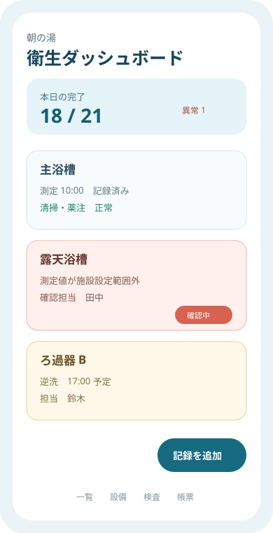
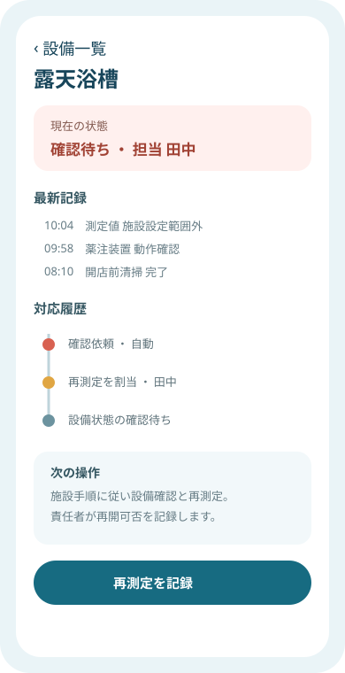

Question Note
公衆浴場の衛生記録と異常対応をつなぐ小規模サービス案


全体像
厚生労働省は公衆浴場等で、設備の衛生管理、残留塩素濃度の頻回測定と記録、清掃・消毒、検査結果の保管を示しています。切り出す課題は、測定、設備別清掃、外部検査、基準外時の停止と再開確認が紙束の中で分断されることです。
どの社会問題を切り出すか
初年度は浴槽2〜8基の銭湯、小規模温浴施設、宿泊施設に限定します。
| 現場課題 | 結果 | 既存手段の限界 |
|---|---|---|
| 設備ごとの頻度が違う | 清掃・逆洗・測定が混線する | 一枚の紙では期限と設備関係を出しにくい |
| 異常時連絡が口頭 | 停止、再測定、再開判断が曖昧になる | チャットは承認状態と証跡が散る |
| 検査票が別保管 | 日常記録との因果を追えない | 表計算は写真・設備図・履歴の参照が弱い |
サービス案と中核ワークフロー
浴槽・ろ過器・薬注装置にQRを付け、営業中の測定と閉店後の清掃を設備台帳へ記録します。
- 担当者が設備を選び、測定値または実施項目を登録する。
- 設定範囲外や未実施を責任者へ通知し、対象設備を確認待ちにする。
- 再測定、清掃、検査依頼、停止・再開判断を時系列で残す。
- 保健所確認に備え、期間・設備別の記録を出力する。
本サービスは衛生基準や保健所判断を代替せず、施設が定めた手順を抜けなく実施するための記録・引継ぎに限定します。
100万円規模に抑えた市場設定
| 到達可能市場 | 一地域の温浴・宿泊施設40拠点 | 現地設定を一人で回せる範囲 |
|---|---|---|
| 月額 | 16拠点 x 5,000円 x 12か月 | 960,000円 |
| 導入支援 | 6拠点 x 10,000円 | 60,000円 |
| 初年度売上 | 合計 | 1,020,000円 |
AWSシステム要件と支出
東京リージョン、1 USD = 150円、無料枠・クレジット除外、16施設、160 MAU、設備100件の概算です。公開前にAWS Pricing Calculatorで再計算します。
| AWSリソース | 用途 | 想定使用量 | 月額 | 年額 |
|---|---|---|---|---|
| Amazon S3 | Web画面、検査票、設備写真 | 8GB | 400円 | 4,800円 |
| Amazon CloudFront | 画面と帳票配信 | 月10GB | 500円 | 6,000円 |
| Amazon Cognito | 作業者・責任者認証 | 160 MAU | 300円 | 3,600円 |
| Amazon API Gateway | 測定・清掃・検査API | 月4万件 | 400円 | 4,800円 |
| AWS Lambda | 範囲判定、期限通知、帳票生成 | 月4万実行 | 400円 | 4,800円 |
| Amazon DynamoDB | 施設、浴槽、ろ過器、薬注装置、測定項目・値、清掃、逆洗、検査結果、担当、停止・再開状態、確認履歴 | 2GB、月10万読書き | 700円 | 8,400円 |
| Amazon SES | 異常・未実施・検査期限通知 | 月2,000通 | 100円 | 1,200円 |
| Amazon CloudWatch | 判定処理と通知失敗監視 | ログ1GB、6アラーム | 500円 | 6,000円 |
| AWS Backup | 衛生記録の日次復旧 | 8GB | 400円 | 4,800円 |
| AWS Budgets | 保管・転送費通知 | 2予算 | 100円 | 1,200円 |
| Amazon Route 53 | 独自ドメインDNS | 1ゾーン | 100円 | 1,200円 |
| AWS合計 | 小規模時の予算上限 | 3,900円 | 46,800円 | |
AIを使った開発見積もり
| 要件 | 設備・頻度・例外フロー整理 | 1.5週 |
|---|---|---|
| 試作 | 測定一覧、詳細、QR入力 | 2週 |
| 実装 | 権限、通知、帳票、監査履歴 | 4週 |
| 検証 | 現場受入と異常訓練 | 2週 |
AIなしの約14週を約9.5週に短縮します。衛生基準、施設固有手順、停止・再開判断は人が責任を持ちます。
売上・支出・利益
売上 - 支出 = 利益
| 売上 | 1,020,000円 | 月額 + 導入支援 |
|---|---|---|
| 支出 | 166,800円 | AWS 46,800円、衛生・法務確認90,000円、現地資材・営業30,000円 |
| 利益 | 853,200円 | 事業主の人件費・税引前 |
必要人数と人材要件
開発・導入1名 + 衛生管理の単発外注です。実行者が設定とサポートを担い、施設責任者・保健所経験者に項目、保存期間、表現を確認します。
リスクと最初の検証
- 法令・自治体条例・泉質による差を共通の固定値にしない。
- 測定値の転記ミスを異常検知だけで安全判定しない。
- 濡れた現場での入力を30秒以内、手袋でも押せるUIにする。
2施設・設備10件・8週間で、未実施件数、異常から確認までの時間、記録作業時間、監査時の検索時間、支払い意思を測ります。